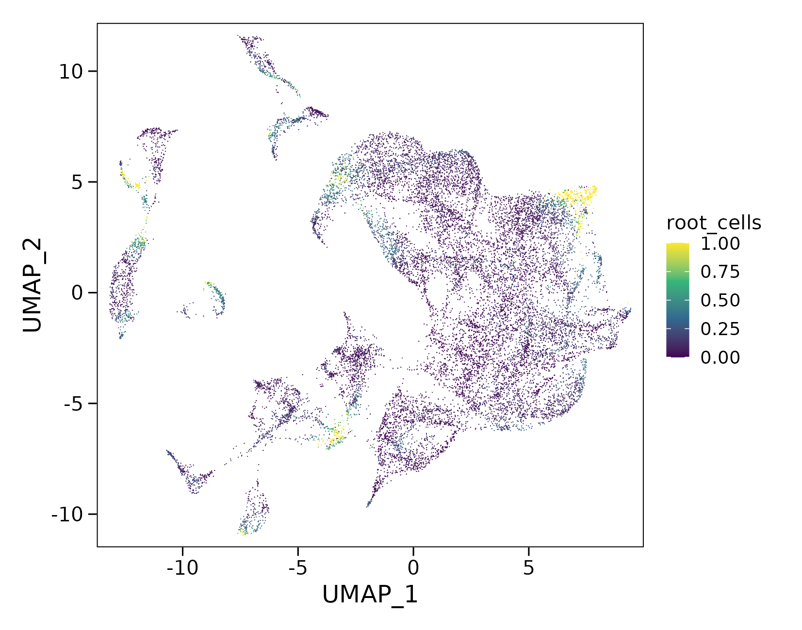
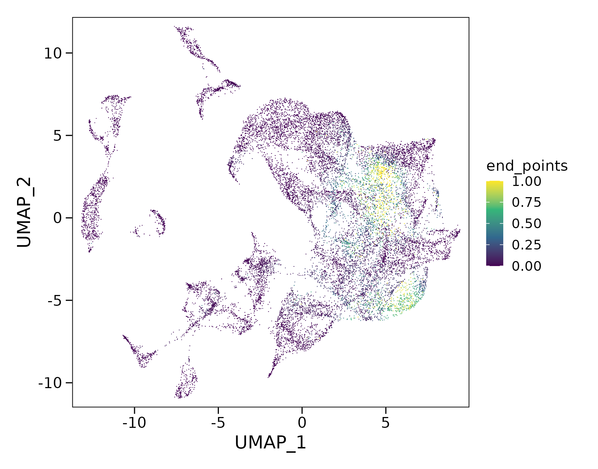
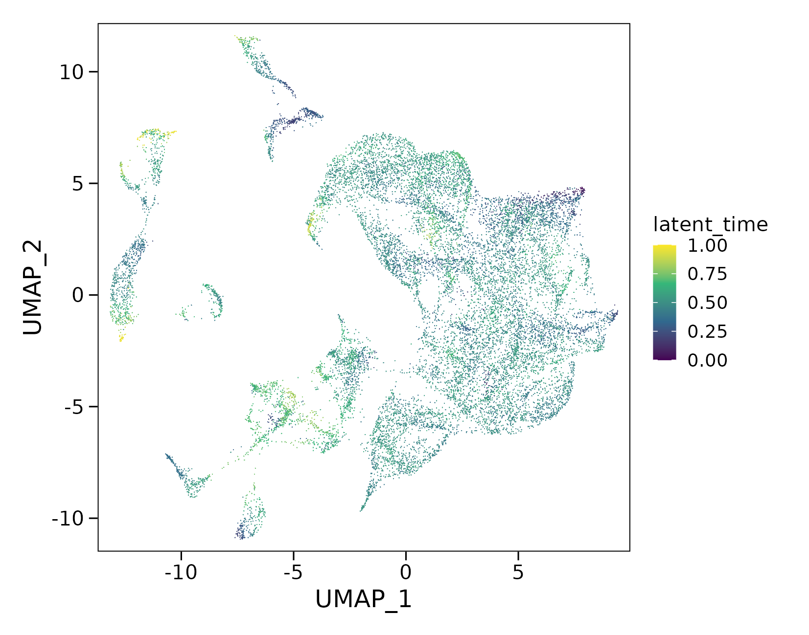

Latent Time & Terminal States
Identify candidate root cells and end points from the velocity graph, then integrate gene-wise fitted times into a shared latent-time axis.
Before you begin¶
Start with the pv object from RNA Velocity Analysis, after completing dynamics recovery, velocity computation and velocity graph construction.
The examples use an existing umap embedding. Cell colours display the inferred scores or latent time, with velocity arrows hidden.
Infer root cells and end points¶
Estimate root-cell and end-point scores from the velocity transition graph:
pv <- compute_terminal_states(pv)The results are stored in the cell metadata:
root_cells— relative support for cells being near the beginning of the inferred dynamics.end_points— relative support for cells being near terminal regions of the inferred dynamics.
Both scores range from 0 to 1. They describe continuous support rather than assigning each cell a discrete root or terminal-state label.
Root cells
Visualize the root-cell scores:
plot_velocity_embedding(pv, reduction = "umap", group_by = "root_cells", show_arrows = FALSE)
Higher scores highlight candidate starting regions in the velocity graph.
End points
Visualize the end-point scores:
plot_velocity_embedding(pv, reduction = "umap", group_by = "end_points", show_arrows = FALSE)
Higher scores highlight candidate terminal regions. Interpret these regions alongside cell annotations and the velocity field.
Compute latent time¶
Combine gene-wise fitted times into a shared temporal ordering:
pv <- compute_latent_time(pv, min_likelihood = 0.1)The function uses fitted gene times and automatically searches for root-cell information, including the root_cells scores computed above. The resulting values are stored in pv@meta.data$latent_time.
min_likelihoodcontrols the fitted-likelihood threshold used to select genes for time integration. If fewer than two genes pass filtering, the current implementation falls back to genes with complete fitted times and issues a warning.min_confidencecontrols the local-consistency threshold used during neighbourhood-based correction. Its default value is0.75.- By default, latent time is normalized to the interval from 0 to 1.
Visualize latent time
plot_velocity_embedding(pv, reduction = "umap", group_by = "latent_time", show_arrows = FALSE)
Lower values represent earlier positions and higher values represent later positions along the inferred temporal ordering. Latent time is a relative model-derived coordinate, not elapsed time in hours or days.
Specify root and end-point information
To explicitly use the inferred root scores and add end-point scores as a weak temporal prior:
pv <- compute_latent_time(pv, min_likelihood = 0.1, root_key = "root_cells", end_key = "end_points")root_keyspecifies the metadata column used to identify candidate root cells.end_keyspecifies the metadata column used as a weak end-point prior. This constraint is optional and is not applied by the basic call above.
This call updates the latent-time values in pv.
Inspect the results¶
Review the inferred values for individual cells:
head(pv@meta.data[, c("root_cells", "end_points", "latent_time")])Compare their distributions:
summary(pv@meta.data[, c("root_cells", "end_points", "latent_time")])Assess whether the inferred starting regions, terminal regions and temporal ordering agree with the cell annotations, velocity directions and gene phase portraits. These results describe inferred transcriptional dynamics and do not directly establish cell ancestry.
Continue to driver-gene ranking¶
Continue with Driver Gene Ranking to explore genes associated with the inferred dynamics.